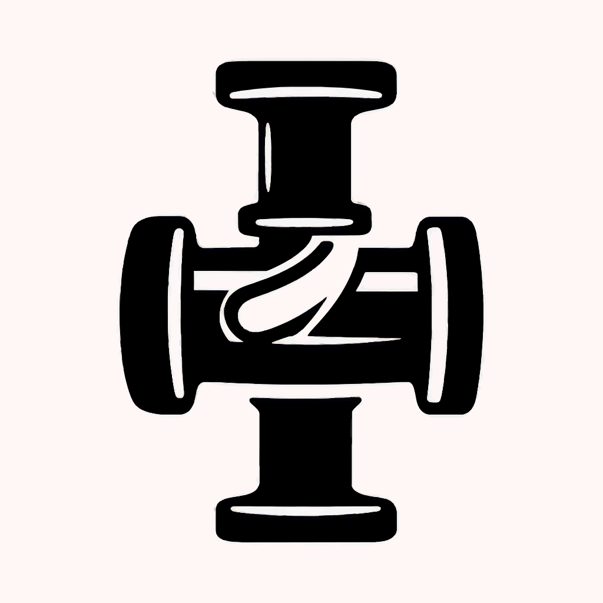

Pipe
▶️
Shorts
Hides the Shorts shelf, sidebar link, and short videos in search results.
📄
Title & Description
Hides the video title and description panel on watch pages.
🔔
Notifications
Hides the notification bell from the top bar.
💬
Comments
Hides the entire comments section on watch pages.
🎯
Recommendations
Hides the "Up Next" sidebar, home feed, and end-screen suggestions.